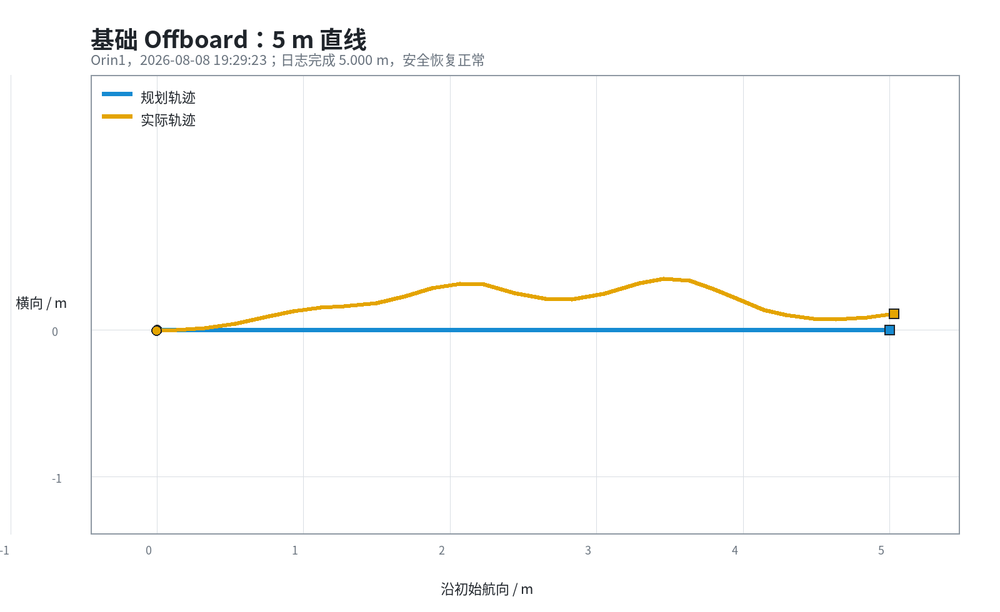
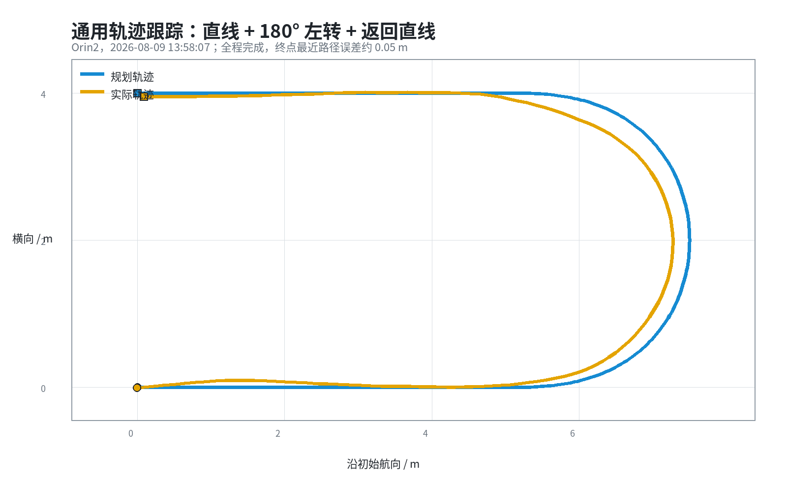
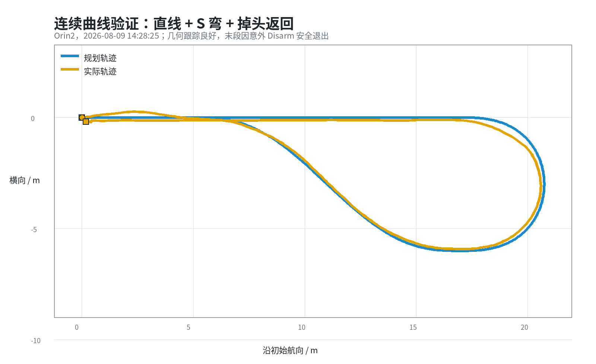

图 1 当前两车任务、通信、本地闭环与安全链路
当前小车是空中对接算法的二维验证工具。高层关注的是任务阶段、共享走廊和相对运动；低层由每辆车独立完成路径跟踪。Pair B 只传输 MiniState、FieldOrigin、PlanCommand、MissionStatus 和 Abort 等低频紧凑消息，不承载 ROS2 DDS、图像或高频转向闭环。
程序在本车坐标系 BODY_NED 中发布速度指令。对当前 PX4 rover 路径，前进量主要由 linear.x 表示，差速转向由 linear.y 映射；不能假设 angular.z 一定进入差速控制器。PX4 再把左右执行器输出转换为 MAIN1/MAIN2 PWM，Arduino 负责死区、方向映射和 D24A 电机驱动。
| 问题 | 现象 | 处理 |
|---|---|---|
| post-OFFBOARD 冗余等待 | 进入 OFFBOARD 后仍保持 2 s 零输出，可能与自动解锁/状态保持窗口冲突 | 保留模式前零预流，观察到 armed+OFFBOARD 后立即进入第一段动作 |
| 起步先修 yaw | 车辆先左右摆头，再沿预设方向前进 | 以进入任务时的当前航向/短距离地面航迹为参考，不做预对准动作 |
| 方向与死区 | 前进变后退、低速不动或左右轮响应不一致 | 逐层核对 PX4 REV、MAIN1/2、Arduino 四轮方向和 PWM 死区；控制层只使用已验证映射 |
| 状态竞态 | 首帧 mode 出现 CMODE 或 State 约 1 Hz，程序误判缺失/陈旧 | 有限等待完整 MANUAL 安全前态；State 新鲜阈值按实测周期设置为 2 s |
| 异常退出不可辨识 | 早期日志把 Disarm、Offboard exit、断连和陈旧状态混为一类 | 细分失败原因并同步记录 State、ExtendedState 与 STATUSTEXT |

轨迹先按弧长离散为二维点列。每个控制周期使用当前位置在路径上的局部投影，沿路径向前选择速度相关的前视点，再结合参考曲率、横向误差和航向误差生成有界转向量。最后把几何命令转换为本车 BODY_NED 的前进/横向速度。该方法接近带曲率前馈和反馈修正的几何前视控制，不是 MPC。
通用性来自“路径几何 → 本地闭环”的统一接口：直线、圆弧、U 形、S 形和后续走廊只更换路径点，不更换底层状态机和安全门。曲率、曲率变化率、最大车体转向量和转向变化率在执行前及运行时都受限。

U 形轨迹验证了直线与定半径转弯的连续切换。代表性成功组的路径长度为 17.27 m，最近路径 RMS 误差约 0.14 m，终点误差约 0.05 m。

S 曲线进一步暴露并修复了固定前视、曲率反馈不足、转向突变和出弯误差等问题。图示组在退出前已运行约 46.05 m，最近路径 RMS 误差约 0.14 m。该组没有被记为完整成功，因为日志明确记录 unexpected_disarm；它的价值是证明几何跟踪质量和异常恢复，而不是掩盖中断。
| 记录 | 规划长度 / m | RMS 最近路径误差 / m | P95 / m | 终点最近路径误差 / m | 结果 |
|---|---|---|---|---|---|
| 5 m 直线 | 5.00 | 0.21 | 0.34 | 0.12 | 完成；MANUAL/disarmed |
| U 形轨迹 | 17.27 | 0.14 | 0.28 | 0.05 | 完成；MANUAL/disarmed |
| 连续 S 轨迹 | 46.79 | 0.14 | 0.26 | 0.18 | 末段意外 Disarm；安全恢复 |
| 8115 Carrier | 46.79 | 0.28 | 0.39 | 0.52 | 按终端间距提前停止 |
| 8115 Mini | 46.79 | 1.26 | 2.12 | 0.07 | 完成全路线 |
注：误差由实际采样点到最近规划线段的欧氏距离重新计算。该指标适合比较路径形状，不代表 RTK 级绝对定位精度；普通 GPS 漂移会同时影响规划参考、实际轨迹和双车相对距离。
| 节点 | 当前角色 | 职责 |
|---|---|---|
| Orin2 / MAV_SYS_ID=2 | Carrier / leader | 锁定共享 FieldOrigin，接收 MiniState，决定阶段并发布 PlanCommand/Abort，同时执行本车轨迹 |
| Orin1 / MAV_SYS_ID=1 | Mini / executor | 验证 plan_id、seq、TTL 与安全状态，执行本地轨迹并回传 MiniState/MissionStatus |
| Ground / Boss | 现场安全与监控 | RC Kill、QGC、场地确认、日志观察；不作为运行时高频控制器 |
最终测试采用分阶段追随逻辑：两车就绪后 Mini 先出发；Carrier 同时满足 5 s 延迟和 Mini 领先 2 m 后启动。两车都使用各自本地轨迹跟踪器，Pair B 不发送每个控制周期的电机量。Mini 完成后先发送终态，Carrier 继续根据共享坐标中的相对位置接近，达到目标间距后停止。
Carrier 发布 FieldOrigin，双方将 GPS/Local Position 转成同一 ENU。由于两套 PX4 local frame 起点不同，测试用现场已知队形“Mini 在 Carrier 前方 0.50 m”进行平移注册；yaw 仅用于方向注册。计划 8115 的原始 GPS 相对量为 (+0.73, +0.02) m，注册后 Mini 起点约为 (-0.01, +0.47) m。


| 当前限制 | 影响 | 建议 |
|---|---|---|
| 普通单点 GPS | 双车相对间距出现约 0.6 m 的单次测量差，厘米级结论不可信 | 更换 RTK；两车确认 FIX、基线与时间同步后再收紧终端容差 |
| 轮速没有编码器闭环 | 同一速度请求在不同地面、电压和底盘上响应不同 | 小车阶段继续依靠位置反馈和有界几何跟踪；上飞机后由飞控速度/姿态闭环承担 |
| 当前不是完整 EasyDocking | 已验证的是分阶段 S 路线追随，不是轨道切出与末端切线对接 | 下一步接入 Mini 稳定绕圈一周、Carrier 生成平滑进场、双方进入同一 terminal tangent corridor |
| 当前控制器不是 MPC | 无法直接表达复杂时域约束和最优性 | 先用已验证的解析轨迹 + 几何闭环完成系统联调；飞机阶段再评估 MPC/非线性优化的必要性 |
本文档的轨迹误差、路线长度和终端间距图均由上述 CSV/日志自动生成；未读取或启动任何车辆进程。